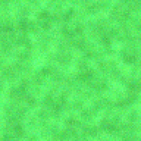
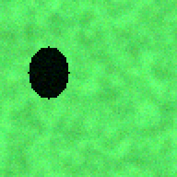
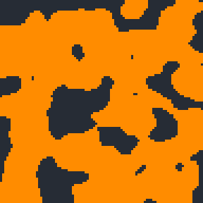
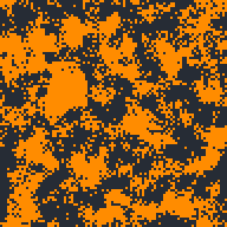
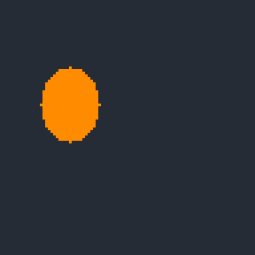

Finding what changed between two satellite photos
Give it two photos of the same place taken months apart, and it marks the pixels that changed: cleared forest, new buildings, flooding. It learns what satellite images look like from unlabelled photos, so nobody has to hand-label thousands of examples.
Status: a research project with an honest negative result. On photos it had not seen, the trained network does not yet beat a simple colour difference. The sections below show what that means and why.
Source code Quick start Glossary
What it does, in one picture
Here is one scene the network never saw during training (scene008, a synthetic scene). Orange means “changed”. The first two images are the question, the third is the answer key, and the rest are attempts to find the answer. The changed area is obvious to the eye, and a good method should find just that patch.

The first photo.

The second photo of the same place.

5.2% of the scene. This is the answer key.

Marks 73% as changed. Score (F1): 0.10.

Marks 48% as changed. Score (F1): 0.15.

Marks 5.2% as changed. Score (F1): 1.00.
How it works
First it learns, with no answers given, what ordinary satellite imagery looks like. Then, for a before and after photo, it describes each pixel of both with the same network, and marks the pixels whose descriptions differ most. A cut-off picks which of those count as changed.
How well does it work?
The network was trained on 8 synthetic scenes and tested on 4 others it had never seen. Every method below was tested on the same 4 scenes and uses the same cut-off rule. Higher is better. A score of 0.5 on AUROC means no better than guessing. See the glossary for what each column means.
| method | AUROC | F1 | IoU | Precision | Recall |
|---|---|---|---|---|---|
| Trained network (this project) | 0.491 | 0.181 | 0.101 | 0.103 | 0.798 |
| Same network, untrained | 0.702 | 0.529 | 0.449 | 0.477 | 0.673 |
| Colour difference, each photo stretched on its own | 0.740 | 0.240 | 0.138 | 0.144 | 0.757 |
| Colour difference, raw values | 1.000 | 1.000 | 1.000 | 1.000 | 1.000 |
The trained network does not work yet. It scores 0.49, which is close to guessing (0.50), and a plain colour difference beats it (0.74). The cause is visible in the last two rows. Comparing the raw values scores 1.00, almost perfect, but stretching each photo on its own first drops that to 0.74. A big change in one photo shifts how that photo is stretched, so the whole scene looks different. The network is trained on stretched photos too, so it very likely suffers the same way. I have not retrained it with a shared stretch yet. That is the first thing to try.
Training details
Loss over 30 epochs, reproduced by scripts/reproduce_results.py.
Final loss: 0.733. The loss falls, so the network is learning its training task, but that task has
not yet translated into finding change.
Results scene by scene (trained network)
| scene | iou | f1 | precision | recall | auroc |
|---|---|---|---|---|---|
| scene008 | 0.052 | 0.098 | 0.053 | 0.739 | 0.435 |
| scene009 | 0.143 | 0.250 | 0.144 | 0.932 | 0.671 |
| scene010 | 0.084 | 0.155 | 0.088 | 0.650 | 0.310 |
| scene011 | 0.124 | 0.221 | 0.126 | 0.871 | 0.549 |
These are synthetic scenes: the changed patch is a flat, distinct colour with mild noise, so they are much easier than real change. They check that the pipeline works. They do not measure real-world accuracy.
Reproduce it
pip install -e ".[geo,dashboard]" python scripts/reproduce_results.py # trains and tests, a few minutes on a CPU python scripts/build_site.py # rebuilds this page
The interactive dashboard runs locally with streamlit run app.py. It is not hosted, because this
page is static.
Limitations
- A research baseline, not a monitoring product.
- It outputs a yes/no change map. It does not say what kind of change happened.
- It assumes the two photos are already lined up pixel for pixel.
- It has not been tested on real labelled change data. That is the necessary next step.
Glossary
- Change detection
- Finding what is different between two photos of the same place taken at different times.
- Self-supervised learning
- Training a network without anyone labelling the answers. Here it learns from unlabelled photos by recognising that two distorted copies of the same patch are still the same patch.
- Encoder
- The neural network. It turns each small area of a photo into a list of numbers that describes it.
- Held-out
- Photos the network never saw while training. Testing on them shows whether it learned something general, instead of memorising.
- Baseline
- A simple method to compare against. If a fancy method can't beat a simple one, it isn't helping yet.
- AUROC
- A score from 0 to 1 for how well a method ranks truly changed pixels above unchanged ones. 0.5 is the same as guessing, 1.0 is perfect.
- F1
- A score from 0 to 1 for the final changed/unchanged map. It penalises both missed changes and false alarms.
- Otsu threshold
- An automatic way to pick the cut-off that turns a change score into a yes/no map, without labels.
- Synthetic scenes
- Computer-generated photos with a known changed patch. They are easy and are only a check that the code works, not a measure of real-world accuracy.
- Sentinel-2
- The European satellites whose 10-metre images this project is designed to use.
Source: github.com/inshal8717/self-supervised-satellite-change-detection-train ·
Page generated by scripts/build_site.py.